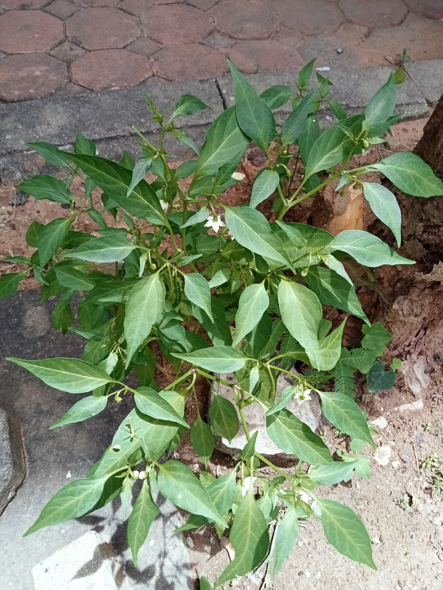

ต้นพริก
ต้นพริก
ประวัติความเป็นมา
ในปี ค.ศ.1492 เมื่อ Christopher Columbus ออกเดินทางจากสเปนไปทางทิศตะวันตกเพื่อไปจีน กับอินเดีย และนำเครื่องเทศที่ชาวตะวันออกนิยมใช้ทำยา และเป็นองค์ประกอบหนึ่งในการเพิ่มรสชาติของอาหารกลับมา เสริมความมั่นคงและสร้างความมั่งคั่งให้แก่ชาวยุโรปที่ตั้งรกรากอยู่ตามเมืองท่าต่างๆ เช่น Alexandria ในอียิปต์ Genoa และ Venice ในอิตาลี เพราะในสมัยนั้นคนยุโรปรู้จักเพียงพริกไทยดำ ซึ่งมีราคาแพงมหาศาลจนพ่อค้าต้องแกะจากรวงขายเป็นเม็ดๆ และความต้องการไปทำการค้าที่จีนกับอินเดียนี้เองที่ทำให้เกิดเส้นทางพานิชที่สำคัญมากมายระหว่างยุโรปกับเอเชีย
รายละเอียดพืชพันธ์ุ
ลำต้น เป็นพืชผักสมุนไพร เป็นพืชล้มลุก เป็นทรงพุ่มขนาดเล็ก มีลำต้นเดี่ยวตั้งตรง ลำต้นมีลักษณะกลมๆ แตกกิ่งก้านสาขามาก กิ่งอ่อนมีสีเขียว กิ่งแก่มีสีน้ำตาล ใบ เป็นใบเดี่ยว ออกเรียงสลับกัน มีลักษณะทรงเรียวรี ปลายใบแหลม ใบเรียบมัน ขอบใบเรียบ มีก้านใบยาว ใบมีสีเขียว มีขนปกคลุมทั่วใบ